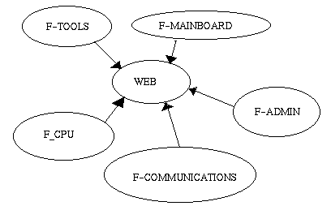

|
por Manuel Benet Navarro Sobre el Author: Estudia actualmente Ingeniería Informtática en la Universidad Politécnica de Valencia, donde pasa la mayor parte de su tiempo. Le encanta Linux (Unix* en general) desde hace 5 años que empezó a usarlo, y todo lo relacionado con la arquitectura de computadores. Fuera de los ordenadores, le gManuel Benet Navarrousta oír música, ir al cine y esquiar en tabla de surf. |
Resumen:
El proyecto F-CPU intenta desarrollar un microprocesador similar a los actuales (Pentium II, Merced) siguiendo un esquema de desarrollo similar al de los grandes proyectos de software libre. Aunque en principio pueda parecer utópico, hay puntos que podrían favorecer que se convirtiese en realidad.
Sí. Has leído perfectamente. La palabra "cpu"
corresponde efectivamente al acrónimo tradicional:
unidad central de proceso (central processing unit), no a
cualquier otro que pudieras haber supuesto al leer el
título. Y la "F", naturalmente, corresponde a "Freedom"
(libre). Este es el proyecto que describiré en este
artículo.
Antes de nada, decir que no voy a
entrar en consideraciones de diseño que se hayan
tomado en dicho proyecto, sino que mostraré la
organización de éste y cuales son sus
objetivos.
El proyecto F-cpu nace alrededor del final del verano de
1998 (desconozco la fecha exacta puesto que aún
estaba de vacaciones ;) de la mano de Brion Vibber y Andrew
D. Balsa, como un intento de desarrollar un microprocesador
(su nombre es F1, actualmente) que sea una alternativa a los
que ya existen en el mercado, extendiendo la idea del
software libre (GNU/GPL) al hardware (aunque quizá no
con la misma licencia, por problemas legales, sino con una
similar).
Evidentemente, esto no implica que el micro
sea distribuido gratis, puesto que lleva unos costes de
producción que no tiene el software, pero si que
conlleva que su implementación y arquitectura sean
libres, a la vez que sigue un modelo de desarrollo similar
al de los proyectos de software que hacen uso de la licencia
GNU/GPL, es decir, un desarrollo abierto a cualquier persona
que quiera contribuir.
Probablemente estarás escéptico ante el
proyecto, porque ¿quién va a pagar los
costes de producción?¿Quién va a
implementar el micro una vez diseñado?
Puesto
que el micro no va a ser gratis (se ha estimado un coste de
100$), las ventas de éste suplirán los costes de
producción. Debido a la corta edad del proyecto,
aún no se dispone de bastante material como para
cuestionarse esto. En cualquier caso, una vez
diseñado, convenientemente testeado, y analizado su
rendimiento, se pretende que diversas compañias lo
fabriquen. Un hecho que facilitará esto será
que el F1 se basa en mejoras arquitectónicas, no en
mejoras de la tecnología de integración, por
lo que a la hora de crear el micro, tecnologías de
0.25 micras (o aún menores, posiblemente)
estarán disponibles a un precio razonable.
|
|
De acuerdo, de acuerdo, parece razonable, pero,
¿Qué rendimiento tendrá el F1?
En este punto el proyecto es bastante ambicioso (aunque
deben de serlo si realmente quieren que el proyecto se haga
realidad). Se estima que el rendimiento final en entero
será como mínimo igual al del Merced, y en
coma flotante superior a éste.
Bueno, eso es fantástico, pero,
¿Qué pasa con mi Linux? Porque yo, sin mi
linux, no voy a ninguna parte...
Respecto a este
punto, el proyecto es muy claro. El micro está
desarrollado especialmente para Linux, y, no, NO será compatible con Winbugs
(98, NT), ni el Wine funcionará sobre
éste. Respecto a otros sistemas operativos, se deja
abierta una puerta a un posible emulador de x86, y no se
menciona nada sobre otros sistemas operativos.
Estoy impaciente por poner un F1 en mi placa base...
¿ Cuándo podré tener un F1?
Esto, evidentemente, está condicionado a la futura
evolución del proyecto, pero suponiendo que todo vaya
como debería, se espera el F1 para el 2000, y bueno,
el F2...
Tras la ronda de preguntas, algunos puntos sobre el el
proyecto.
El proyecto F-cpu ha dado lugar a varios
proyectos alternativos que cubren otros aspectos de la
arquitectura PC que le atañen también
directamente al F1, y con los que guarda una estrecha
colaboración. Estos incluyen aspectos relativos a la
placa base (¿Qué socket utilizará el
F1? ... en principio, Socket 7, Slot 1 y Super 7 ...),
herramientas que es necesario desarrollar para la
evaluación y simulació del F1.
|  |
Como se puede observar, la web actúa de
coordinador principal entre todos los grupos. No obstante,
actualmente el principal punto de comunicación entre
éstos son las respectivas listas de correo (ver al
final del artículo para más
información), pero el uso que se espera es que cada
desarrollador actualice mediante CVS la información
del servidor web.
El proyecto está actualmente
aún en su fase inicial, donde todavía no hay
un grupo grande de desarrolladores. Sin embargo, hay
algunas personas (mención especial requieren
AlphaRISC, KC5TJA,
Andrew D. Balsa, Jecel Assumpcao Jr, Rafael Reilova, Steve Wilson,... y algunos más que no recuerdo, aunque están ahí) que ya están trabajando en herramientas de simulación, y el número de personas involucradas en el proyecto, aunque no aumenta espectacularmente (pero sí que lo hace), no parece disminuir, teniendo en cuenta que aún hay mucha gente que desconoce que existe este proyecto. De cualquier modo, ultimas incorporaciones al proyecto muestran que hay gente con sólidos conocimientos de hardware, VHDL y herramientas de simulación que se está interesando por el proyecto F-cpu.
Y para finalizar, daré mi impresión personal sobre el proyecto:
| ...el proyecto f-cpu parece más ambicioso que cualquiera de estos dos proyectos (Gnome, KDE). |
De cualquier modo, y como alguien me dijo, este proyecto puede ser un buen sitio donde aprender.
Para más información:
Allí encontrarás información sobre el proyecto, las directrices, doumentación... Ten en cuenta sin embargo que es un proyecto nuevo y puede no funcionar todo como debería.
|
Contactar con el equipo de LinuFocus
© Manuel Benet Navarro LinuxFocus 1999 |
1999-07-02, generated by lfparser version 0.6